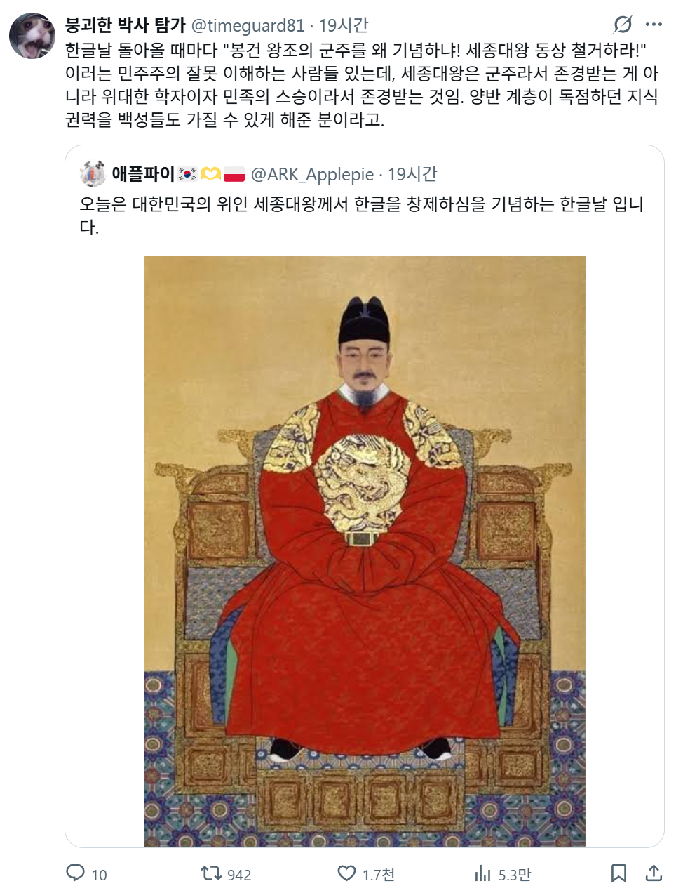

세종대왕 보고 봉건왕조 잔재라며 욕하는사람 살면서 현실은 물론 인터넷에서도 본적이 없는디
이건 괴담아닌가

세종대왕 보고 봉건왕조 잔재라며 욕하는사람 살면서 현실은 물론 인터넷에서도 본적이 없는디
이건 괴담아닌가
저때 한글이 안만들어 졌으면 중국어나 일본어가 국어가 됬을려나
문자와 말은 다름...
한국어는 이미 존재했음. 표기할 고유 문자가 없어서 한자를 썼던 거지.
예를 들어 너구리는
汝 "너" 여
古 옛 "고"
里 마을 "리"
이렇게 汝古里라고 표기했음. 엄청 머리 아프겠지? 그러니까 한글 만든 거임.
당장 한글이 없었어도 이두 같은 건 쓰고 있었음
정 대체제가 없었으면 베트남처럼 됐겠지
맞아 베트남 인도네시아처럼 서양 알파벳이 나라글이 됐을듯
북쪽 빨간 사람들이 이씨왕조라고 저러는것 같던데
너도 리트윗 하나도 안된거 가져와서 패잖아
쟤도 그런거야
그냥 어그로임 댓글 같은거로 호응해주면 아주 좋아함
진짜 어진이 발견되면 난리날텐데, 왜 분실이냐...
625때 불나서 대부분 소실된거아님?
조선초 어진은 임진왜란때 다 탐 거기서 하나 남았던게 세조어진
누가 세종대왕님 동상을 가지고 욕함? 본적이없는디
그야말로 플라톤이 원하던 철인 그 자체신분
5천만명중에 백명은 있겄지 뭐
걔네도 선진국 기분낼라고 하는거임
중국인들 입장에선 한국문화가 중국에 종속되지 못하게한 일등공신이니 싫어할만하지
현재의 관점으로 역사를 재단하려는 사람들은 꽤 보여서 있을만하네 ㄲㄲ
정은이애호가들도 있는데 뭐
아예 틀린말은 아니긴 해 시대적 한계라는게 있으니
타임머신 타고 세종대왕 앞에 섰다가 뭐 실수하면 모가지 잘릴걸
20년 세대차도 극복못하는데 600년이면 진짜 만나온 사람들 실망할지도
고려시대와 조선 초기 때까지만 해도 여자들을 그렇게 쪼지는 않았는데, 세종이 소학에 꽂혀서 반포하고 보급한 이후로, 조선 후기에 재가도 못하고. 열녀문에 목매달고 하긴 했...
옛날에 본적은 있긴한데
세종대왕만이 아니라 왕 전부를 독재라면서 까더라
노비종모법이 어쩌고 여진족의 파멸 공포군주 이도 저쩌고
어진과 지폐로는 욕 좀 해도 됨
운보 씨발놈
인류 역사에 대한 이해가 많이 부족하거나
아주 심한 욕으로도 표현하기 어려운 .. 그런 삶을 살아온 모양
인문학이 이래서 존나 중요합니다
봉건왕조의 잔재라고 실제로 욕하는 사람들이 있긴 함. 근데 보통 그런 쪽은 사회주의 계열이라 우리 주변에서 보기 힘들거임
세종대왕을 낮춰 생각하는 건 북한쪽 스탠스인걸로 알고 있는데... 세종대왕에 대해서 한글 창제의 공이 있긴 하나 세종대왕도 결국 인민을 착취하고 압박한 봉건 지배자에 불과하다고 보는 걸로 알고 있음. 근데 우리나라에도 그런 의견 가진 사람이 있나?
그리고 세종대왕을 우리 겨레의 큰 스승으로 생각해서 존경하는 건 맞음. 스승의 날이 원래는 은사의 날이라고 해서 5월 26일이었다가 1965년에 5월 15일로 변경한 것도 세종대왕의 탄신일(1397년 5월 15일)에 맞춰서 날짜를 정한 것임.
ㅋㅋㅋㅋㅋㅋㅋㅋ하다하다 이제 킹세종도 욕하냐 이새끼들은?
종교쟁이들일듯?
북돼지들이 주로 하던 소리...
이순신 장군도 봉건왕조에 충성했다고 깎더만

허수아비 만들어서 패는사람들 원래 많음